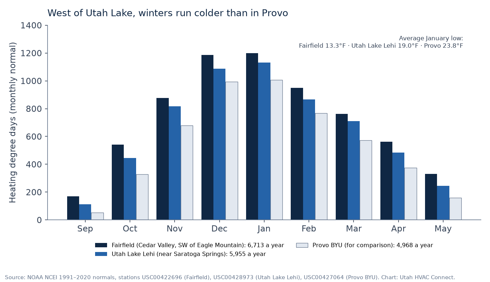

TL;DR
- The two fastest-growing cities in Utah County by percentage since April 2020: since then, Saratoga Springs added about 6,600 housing units and Eagle Mountain about 6,300 (Gardner Policy Institute). In both ZIPs (84045, 84005), more than 92% of homes were built in 2000 or later (ACS 2020–2024).
- So most HVAC questions here are about newer systems (ask about warranty first) or the first replacement of a 2000s-era furnace or AC.
- Winters run colder than in Provo: the nearest NOAA stations average about 5,955 (Utah Lake Lehi) and 6,713 (Fairfield) heating degree days a year, versus 4,968 at Provo BYU.
- Both cities list Rocky Mountain Power for electricity and Enbridge Gas (formerly Dominion) for gas. Eagle Mountain sold its own city power and gas systems in 2015. ThermWise and Wattsmart rebates apply; Wattsmart excludes new construction.
- Permits: Saratoga Springs Building Department (online portal) and Eagle Mountain Building Department, which lists furnace, heat pump, AC, and duct work. Free request; matching depends on shops that serve your ZIP.
Saratoga Springs and Eagle Mountain sit on the west side of Utah Lake, next to Lehi, and by percentage, they are the two fastest-growing cities in Utah County since 2020. Almost all of their homes were built after 2000, which shapes the HVAC questions homeowners ask here. This page collects the local facts we could source: housing age, winter weather, which utilities serve each city, and where permits come from.
Utah HVAC Connect is a matchmaker under Apex Lead Group, LLC. We connect homeowners with licensed Utah HVAC contractors; we’re not a contractor, and we don’t dispatch, diagnose, or quote. We don’t name or vouch for any particular shop on this page, and we can’t promise a match in every ZIP: matching depends on licensed shops that serve your ZIP.
Fast growth, young homes
Per the Kem C. Gardner Policy Institute / Utah Population Committee estimates, Saratoga Springs grew from 37,696 residents in April 2020 to about 60,351 in July 2025 (+60.1%), and Eagle Mountain from 43,623 to about 65,409 (+49.9%). Housing grew even faster: Saratoga Springs added about 6,617 housing units (9,531 to 16,148) and Eagle Mountain about 6,265 (10,539 to 16,804) over the same period (2025 subcounty dataset). By our calculation from that dataset, those are the two largest percentage gains among Utah County cities that had more than 5,000 residents in 2020. A large share of homes here have heating and cooling systems that are only a few years old.
Housing data
| ZIP | Housing units | Owner-occupied | Median year built | Built 2000–09 | Built 2010–19 | Built 2020 or later | Built before 2000 | Heat with utility gas |
|---|---|---|---|---|---|---|---|---|
| 84045 Saratoga Springs | 11,733 | 9,526 (85%) | 2012 | 37% | 40% | 17% | 6% | 85% |
| 84005 Eagle Mountain | 12,764 | 10,621 (85%) | 2011 | 36% | 42% | 14% | 8% | 84% |
Source: U.S. Census Bureau, ACS 2020–2024 5-year estimates for ZIP Code Tabulation Areas (tables B25034, B25035, B25003, B25040), via Census Reporter (84045, 84005). Estimates have margins of error. Year-built shares are of all housing units; heating fuel is for occupied homes.
In both ZIPs, more than 92% of housing units were built in 2000 or later (94% in 84045, 92% in 84005), and the median home dates to 2011–2012. Most homes are single-family detached: 76% of units in 84045 and 83% in 84005 (ACS table B25024).
Which ZIP am I in? City limits and ZIP areas don’t line up exactly. Per the Census Bureau’s 2020 ZIP-to-place relationship file, most of Saratoga Springs is in 84045, but a northern part of the city lies in 84043 (Lehi’s ZIP); most of Eagle Mountain is in 84005, with a part in 84013 (Census relationship file). Enter your own ZIP on the form.
What the numbers suggest
General context, not a diagnosis of your system:
- Homes built in the 2010s and 2020s (about 56–58% of units): systems are often under 15 years old. Before you approve a repair, find your paperwork and ask the shop whether the furnace, AC, or the failed part is still under manufacturer warranty.
- Homes built in the 2000s (about 36–37%): an original furnace from those years is now roughly 17 to 26 years old. ENERGY STAR suggests considering replacement once a furnace is more than 15 years old, and an AC or heat pump once it’s more than 10 (ENERGY STAR). Age starts the conversation; it doesn’t decide it. Our furnace replacement guide lists the questions to ask.
- Heating fuel: 85% of occupied homes in 84045 and 84% in 84005 heat with utility gas; about 13–15% heat with electricity (ACS table B25040). If heat is out right now, start with no-heat help.
Winters west of Utah Lake run colder

NOAA has no climate-normals station inside either city, so we used the two closest stations we found, each about 5–6 miles from the Census interior point of the nearest ZIP:
- Utah Lake Lehi (elevation about 4,505 ft), near the north end of Utah Lake by Saratoga Springs: about 5,955 heating degree days a year, with an average January low of 19.0°F (NOAA annual normals; monthly).
- Fairfield (about 4,880 ft), in Cedar Valley southwest of Eagle Mountain: about 6,713 heating degree days a year, with an average January low of 13.3°F.
- For comparison, Provo BYU, the Utah County station on our other local pages, averages about 4,968 heating degree days and a January low of 23.8°F (NOAA; monthly).
That’s about 20% more heating demand at Utah Lake Lehi than at Provo, and about 35% more at Fairfield. Neither station sits in your neighborhood, so treat them as a regional guide. The practical point: furnaces on this side of the lake run long hours from November through March, so a furnace that limps through October is worth having looked at before December. On high-efficiency furnaces, a condensate drain routed outdoors or through a cold space can freeze on the coldest nights; our cold-air guide explains why.
Cooling demand is lower here than in Salt Lake City: about 788 cooling degree days a year at Utah Lake Lehi and 406 at Fairfield, versus about 1,420 at the Salt Lake City airport (NOAA; NOAA, SLC).
Utilities and rebates
- Saratoga Springs: the city’s new-resident page says power is provided by Rocky Mountain Power and gas by “Dominion Energy” (Saratoga Springs). Dominion’s Utah gas utility now does business as Enbridge Gas Utah, after Enbridge bought it in June 2024 (Enbridge).
- Eagle Mountain: the city says electricity is provided through Rocky Mountain Power and gas through Enbridge Gas (Eagle Mountain City). It wasn’t always that way: Eagle Mountain ran its own electric and gas systems until it sold them in 2015, after voters approved the sale in November 2014. Rocky Mountain Power bought the electric system and Questar Gas (now Enbridge) the gas system (RMP notice to the Utah PSC, 2015; PSC docket 15-057-01). If you have old paperwork that mentions city power or city gas, that’s why.
So in both cities, the usual statewide programs are the ones to check, as listed on October 19, 2026:
- Gas (Enbridge Gas ThermWise): $300 for a 95%–97.4% AFUE gas furnace, $350 for 97.5% AFUE or higher with an ECM, and $700–$1,200 for qualifying dual-fuel heat pump systems; the rebate request must be postmarked within six months of installation (ThermWise).
- Electric (Rocky Mountain Power Wattsmart): $1,450 for an AHRI-rated dual-fuel heat pump system ($700 if not AHRI-rated), installed by a program-participating contractor, with the application due within 180 days. Note for a fast-growing area: Wattsmart says the home must be an existing single-family home, not new construction (Wattsmart). Ask before you count on it for a home that’s still being built.
- Federal: the 25C tax credit isn’t allowed for equipment placed in service after December 31, 2025 (IRS).
Weighing an AC replacement, dual fuel, or an all-electric heat pump? See AC and heat pump replacement in Utah.
Permits
- Saratoga Springs: the Building Department issues building permits and does inspections, and it’s paperless: applications go through the city’s Cityworks public portal. The page lists the 2021 International Mechanical, Residential, and Fuel Gas Codes (with Utah amendments) for inspections. The city’s consolidated fee schedule includes mechanical-permit line items for installing or relocating a furnace, including the ducts and vents attached to it, and for appliance vents. We don’t list fee amounts; ask whether the permit is in the bid.
- Eagle Mountain: the city’s permit guide says a permit is required for the installation, alteration, repair, replacement, removal, or conversion of any regulated electrical, gas, mechanical, or plumbing system unless specifically exempted, and its mechanical list starts with “installing or replacing furnaces,” heat pumps, air conditioners, and duct systems (What requires a building permit). Applications go through the Building Department.
Most homeowners have the contractor pull the permit. If you’re weighing a furnace replacement, our guide covers what drives a bid and the rest of the paperwork.
Check the license before work starts
Before anyone works on your system, look the company up on DOPL’s free Licensee Lookup & Verification. You want an Active status and an HVAC classification (H100, or the older S350), under the same business name that’s on your estimate. Step-by-step: how to check a Utah HVAC license.
How matching works
- Tell us what you need on the free Get Help form: service type (Repair, Replace, Install, Tune-up, or “I’m not sure”), urgency (Today, This week, or Planning), your ZIP, and when it’s reasonable to reach you.
- We match licensed Utah shops that serve your ZIP. We don’t dispatch technicians, diagnose, or write proposals.
- Matched pros may reach out using the contact details you provide. You talk with them, compare, and hire who you want, or no one. No homeowner fee and no obligation. More: how it works and how we make money.
Related guides
- Furnace not working? No-heat help in Utah: safety first, basic checks, and what to tell a shop
- AC and heat pump replacement in Utah: AC-only, dual fuel, or all-electric, plus rebates
- Furnace replacement in Utah: repair-or-replace questions, rebates, permits
- Furnace repair in Lehi (84043): the neighboring city, including part of Saratoga Springs’ ZIP area
- Lehi City Power vs Rocky Mountain Power: why utility matters for rebates next door
- Why is my furnace blowing cold air? Including the frozen-drain problem on cold nights
- American Fork (84003)
How we put this page together
This page was written by the Utah HVAC Connect editorial team, not by a contractor. We used public data only: NOAA 1991–2020 climate normals, U.S. Census Bureau American Community Survey (ACS) estimates, and the rebate, permit, and licensing pages published by Utah utilities, cities, and DOPL, each checked on the date shown above. For this page we also pulled ZIP-level housing data, Utah Population Committee growth estimates, and NOAA normals for the two stations nearest these cities, and read each city’s own utility and building pages. We don’t publish prices we can’t source, contractors can’t pay to be mentioned here, and we don’t name partner shops on this page. Programs and rules change, so confirm details with the program or your contractor before you sign anything. See our editorial policy. Spot an error? Email hello@utahhvacconnect.com.
Sources
- Kem C. Gardner Policy Institute / Utah Population Committee, 2025 subcounty dataset (CSV, April 2020 base through July 2025)
- U.S. Census Bureau, ACS 2020–2024 5-year, tables B25034, B25035, B25003, B25040, B25024, ZCTAs 84045 and 84005, via Census Reporter API
- Census Reporter profile, ZCTA 84045
- Census Reporter profile, ZCTA 84005
- U.S. Census Bureau, 2020 ZCTA-to-place relationship file
- U.S. Census Bureau, 2024 Gazetteer file for ZCTAs (interior points, used for station distances)
- NOAA NCEI, 1991–2020 annual normals, Utah Lake Lehi (USC00428973) and Fairfield (USC00422696)
- NOAA NCEI, 1991–2020 monthly normals, Utah Lake Lehi and Fairfield
- NOAA NCEI, 1991–2020 annual normals, Provo BYU
- NOAA NCEI, 1991–2020 monthly normals (heating degree days, average low), Provo BYU
- NOAA NCEI, 1991–2020 annual normals, Salt Lake City Intl Airport
- Saratoga Springs, New Resident Information (utilities)
- Eagle Mountain City, New Resident (utilities)
- Enbridge Inc., Enbridge completes acquisition of Questar Gas Company (June 3, 2024)
- Rocky Mountain Power, notice to the Utah PSC of acquisition of Eagle Mountain City’s electric system (January 2015)
- Utah PSC, Docket 15-057-01: Questar Gas acquisition of the Eagle Mountain City natural gas system
- Enbridge Gas, ThermWise appliance rebates
- Rocky Mountain Power, Wattsmart dual fuel heat pumps (UT)
- IRS, FAQs on 25C under Public Law 119-21
- ENERGY STAR, When is it time to replace?
- Saratoga Springs, Building Department
- Saratoga Springs, Consolidated Fee Schedule (mechanical permit fees section)
- Eagle Mountain City, What requires a building permit (PDF)
- Eagle Mountain City, Building Department
- Utah DOPL, Licensee Lookup & Verification
Questions about the service: hello@utahhvacconnect.com.
FAQ
Do you cover Saratoga Springs and Eagle Mountain?
You can send a free request from any Saratoga Springs or Eagle Mountain ZIP. Matching depends on licensed Utah HVAC shops that serve your ZIP, so we can’t promise a match for every address, and we don’t name or vouch for particular shops. If a match is made, those pros may reach out.
Who provides electricity and gas in Saratoga Springs and Eagle Mountain?
Both cities list Rocky Mountain Power for electricity. For gas, Eagle Mountain lists Enbridge Gas, and Saratoga Springs lists Dominion Energy, whose Utah gas utility became Enbridge Gas Utah in 2024. Eagle Mountain ran its own power and gas systems until it sold them in 2015.
Do I need a permit to replace a furnace or AC here?
Normally, yes. Eagle Mountain’s permit guide lists installing or replacing furnaces, heat pumps, air conditioners, and duct systems. Saratoga Springs’ fee schedule includes mechanical-permit items for installing a furnace, and its Building Department takes applications through an online portal. Your contractor usually pulls the permit.
Is it colder in Eagle Mountain than in Provo?
The nearest NOAA normals station, Fairfield in Cedar Valley southwest of Eagle Mountain, averages about 6,713 heating degree days a year and a 13.3°F January low, versus about 4,968 and 23.8°F at Provo BYU (1991–2020 normals). The Utah Lake Lehi station near Saratoga Springs averages about 5,955. Treat them as a regional guide, not a reading for your street.
Can I get a Wattsmart heat pump rebate on a brand-new home?
Wattsmart’s dual-fuel heat pump rebate says the home must be an existing single-family home, not new construction, with a participating contractor and an application within 180 days. Ask the program or your contractor before you count on it.
My home is less than 10 years old. Should I repair the furnace?
We don’t make that call, and age alone doesn’t decide it. On a newer system, ask the shop whether the furnace or the failed part is still under manufacturer warranty before you approve a repair.